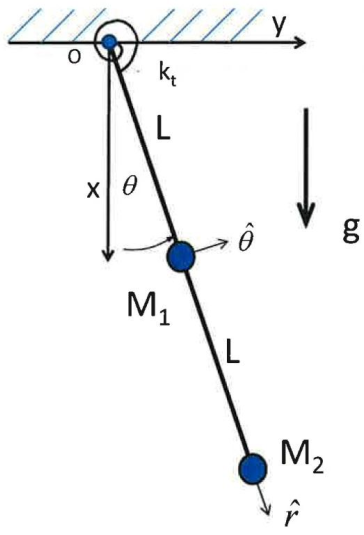

Assignment 7: Two Dimensions and Optimization
This assignment is still being written.
Submit via Sakai.
Exercise 1: Pendulum Simulation
Adapted from MIT 2.003SC Engineering Dynamics, OpenCourseWare, Problem Set 4.
In a classic dynamics course we formulate the equations of motion (using Newton-Euler equations, Lagrange’s equations or Hamiltonian mechanics) and then infer the behavior from analytical solutions to those equations. In this exercise we use computation to simulate the equations of motion and compare the simulation to the analytical results.
Pendulum dynamics
Consider a simple pendulum with a torsional spring at the pivot. The spring creates a restoring torque proportional to the angle of rotation. The rod has length \(2L\) and is rigid and massless. The two point masses each have mass \(m\).

The second-order, nonlinear equation of motion for the system is
\[ 5 m L^2 \ddot{\theta} + k_t \theta + 3 m g L \sin(\theta) = 0 \]
where the angular displacement \(\theta\) is in radians.
Exercise
For this exercise, submit a live script named pendulum.m that solves the nonlinear equation of motion.
- Before writing any code, formulate the problem as a system of two first-order equations by introducing a new variable for the angular velocity, \[
\omega(t) = \dot{\theta}(t).
\]
- In your live script, define the two-element state vector \(\mathbf{x}(t)\). The order of the elements is arbitrary, but write it down as an expression and be consistent.
- Rewrite the second-order equation of motion in state-space form, \(\dot{\mathbf{x}}(t) = \mathbf{f}(\mathbf{x}(t), t)\).
- Given the constants \(m = 0.36\) kg, \(k_t = 0.89\) N·m/rad, \(L = 0.21\) m and \(g = 9.81\) m/s², write a local rate function that implements the mathematical model using the ODE solver convention. From the
ode45documentation: “The functiondydt = odefun(t,y), for a scalartand a column vectory, must return a column vectordydtof data typesingleordoublethat corresponds to \(f(t,y)\).odefunmust accept both input argumentstandy, even if one of the arguments is not used in the function.” Test the function with some nominal values for time and the state vector. Do the results make intuitive sense? - Estimate the response analytically using the small-angle assumption, \(\sin(\theta) \approx \theta\), which gives the linear approximation of the nonlinear model, \[ 5 m L^2 \ddot{\theta} + (k_t + 3 m g L)\, \theta = 0. \] From this linear approximation, the natural frequency of oscillation (in rad/s) is \[ \omega_n = \sqrt{\frac{k_{eq}}{I_{eq}}} = \sqrt{\frac{k_t + 3 m g L}{5 m L^2}}. \] For a small-angle initial condition such as \(\theta(0) = \theta_0 = 0.1\) rad, \(\omega(0) = 0\), the linearized solution is \[ \theta(t) \approx \theta_0 \cos(\omega_n t). \]
- Use
ode45to solve the full nonlinear problem with the initial conditions \(\theta(0) = 0.1\) rad, \(\omega(0) = 0\), over a time span of four periods of oscillation. Plot the angular displacement as a function of time, and on the same axes plot the linearized approximation. - What happens if the scenario violates the small-angle assumption? Change the initial condition to a larger displacement, say \(\theta(0) = 1.0\) rad (still with zero initial velocity), solve again, and compare the result to the linearized approximation.
Submit and Verify
Submit these .m files:
- Exercise 1:
pendulum.m